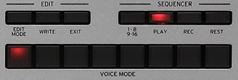

Sequencer
The Minilogue is equiped with an 16 step sequencer, allowing the user to create a 16 step sequence with custom made sounds. The Bpm or "Beats per minute" can be determined by the user as well. The sequence can be played in real time, or can be recorded step by step. Not only the sounds can be recorded, but the parameters as well. The Filters, ADSR's, Delay VCO's, VCO modulation, and LFO are all taking part in this process via "Motion Recording", an option via the "Edit Mode" button. By using the "Write" button the generated sound is saved to one of the two hundred available slots, giving the user the option to re-use a generated sound later on. By using the "1-8/9-16" button every individual step can be selected and modified. The "Play", "Rec" and "Rest" speak for themselves.
